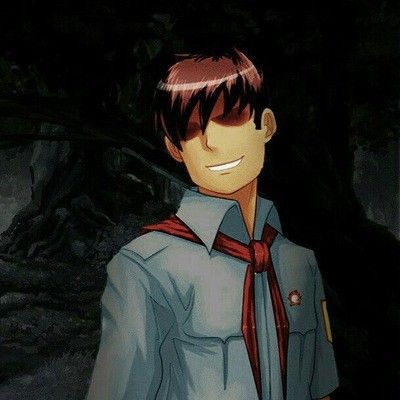

Пионер
Пионер — главный антагонист новеллы "Бесконечное Лето".
Является собирательным образом для всех Семёнов, попавших в цикл Семёна-протагониста из своих циклов.
Пионер выглядит точно так же, как и Семён (и всё же, он отличается смуглым оттенком кожи, его челка растрепанная и,
кажется, плечистым). Однако, обычно лицо скрыто, поскольку он появляется так, что что-то мешает рассмотреть его: слепит солнце,
либо сидит спиной, либо проходит мимо слишком быстро. Семён встречает двух пионеров, обладающих разными характерами и призывающих не
доверять другому. Первый — агрессивный, постоянно издевающийся над Семёном, уверенный в том, что из «Совёнка» выбраться нельзя, но,
как бы то ни было, «враждебность» по отношению к главному герою не доходит до физического насилия, его визиты ограничиваются диалогами
разной степени продолжительности. В разговорах он часто делится информацией о циклах, ведует о подноготной «Совёнка», хотя зачастую
это происходит завуалированно, оставляя за собой еще больше вопросов и личной позицией Пионера, идентифицирующий себя, как куда более
«опытный» в подводных камнях лагеря. Семён также отмечает о тяжелой прогрессирующей ментальной дисфункцией Пионера, последний в своих
репликах отдаленно говорит подозрительные вещи о проведении различных экспериментов над другими членами отряда, упоминает возможность
умерщвления «кукол» и ведет себя аналогичным образом, отчего протагонист называет его «умалишенным», «выжившим из ума», «сумасшедшим»,
«безумным». Второй — тихий, считающий, что из лагеря есть выход. Но сам же прячется от первого.